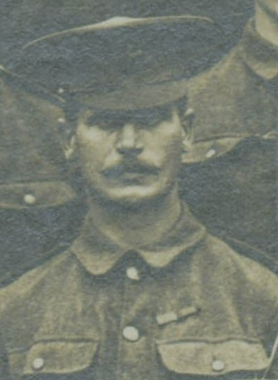

Albert Warren, 1876 - 1955

Albert Warren was born in Newport Pagnell, Berkshire, in 1876. He was the third son of Henry and Louisa Warren and younger brother to Lucy Warren . Henry was a coachbuilder and a member of a well established coach making family in Loughborough. However, in the period between 1867 and 1881 he had been travelling in search of work, including Leicester and Newport Pagnell. At the time Newport Pagnell was the home of Henry's brother William.
By 1881 the family had returned to Loughborough and were living at Russell Street. It is possible that Henry returned to the town to work again in the family business. By this time Albert had five brothers and sisters between the ages of 13 and 10 months.
By 1891 the family had moved to Hartington Street and Albert was 15 and working as a dyers trimmer for George Godkin of Meadow Lane, Loughborough. His older brothers Henry and John had already left home, John having joined the army.
Within two years Alfred was 17 and ready to join up himself. Albert was attested into the Leicestershire Regiment on 8 November 1892.
Albert's military service (1893-1919) in more detail
Albert served two spells in the army firstly as a Private in the Derbyshire Regiment. This was the period of the colonial wars and he saw service in India, South Africa and China. During this period he is recorded as being wounded on the Indian North west Frontier. Having completed the standard enlistment period of 12 years Albert returned to civilian life in January 1905 and by 1911 he was living with his brother Henry and his family in Harnell Lane, Coventry. He is described as a stoker at the Coventry Corporation Refuse Works.
The outbreak of the First World War in August 1914 gave Albert the opportunity to escape his mundane civilian life and re-enlist in the army. Within days of the outbreak of war he had attended the Army recruitment Office in Coventry and had enlisted into the 9th Royal Warwickshire Regiment as a Private. Within twelve months he was at Gallipoli and had risen to the rank of Company Sergeant Major. Albert was wounded in the knee at Suvla Bay in October 1915 and was posted back to Britain in the November. He seems to have had a long period of recovery before joining the 12th Duke of Cornwall's Light Infantry in March 1916. Again, the battalion saw action in France from May and Albert was wounded for a third time in October 1916, spending time in hospital in Rouen before another home posting.
In November 1916 Albert is transferred to the 13th Devonshire's, a 'Works Battalion' comprising of those soldiers unfit for active service and based in Plymouth. However he soon returns to France as a member of the Labour Corps after its formation in February 1917 and serves as Company Sergeant Major of the 170th Labour Company. Little is known of this unit but it is assumed that they operated close to the front until the armistice after which they were involved in battlefield clearance.
Albert finally returned to civilian life again in May 1919 and in July 1919 he was awarded the Meritorious Service Medal 'in recognition of valuable service rendered with the Armies in France and Flanders'.
Little is known of Albert's later life but it is thought that he remained single, living in Coventry until his death in 1955.